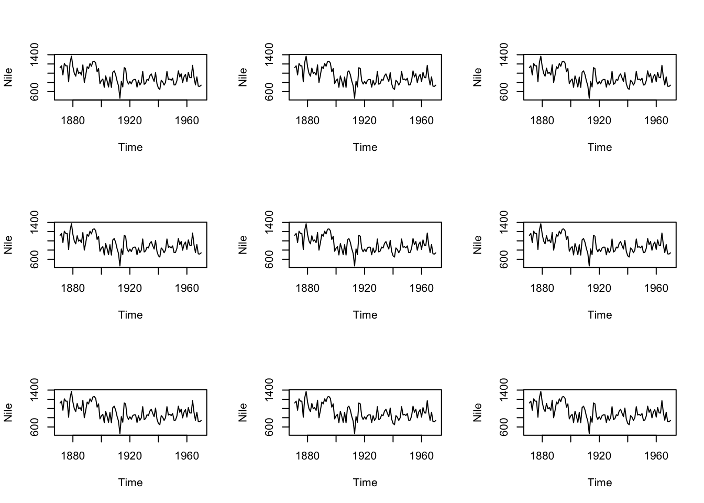
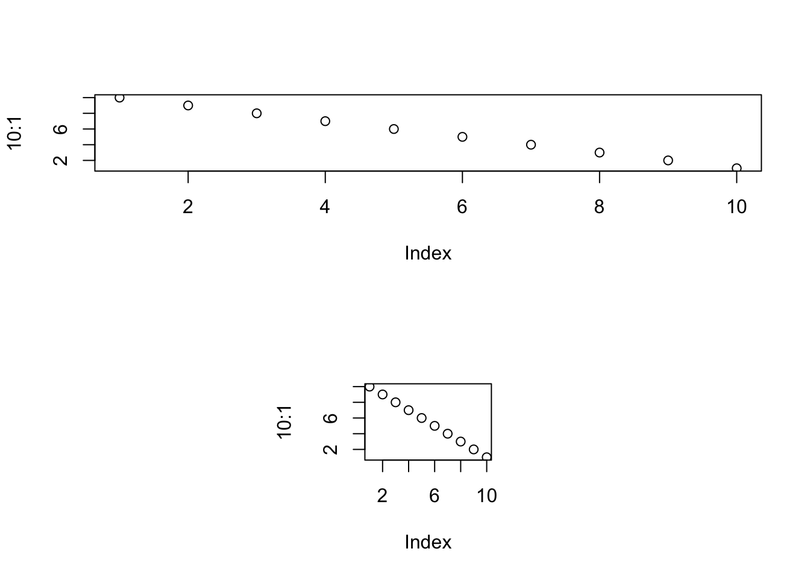
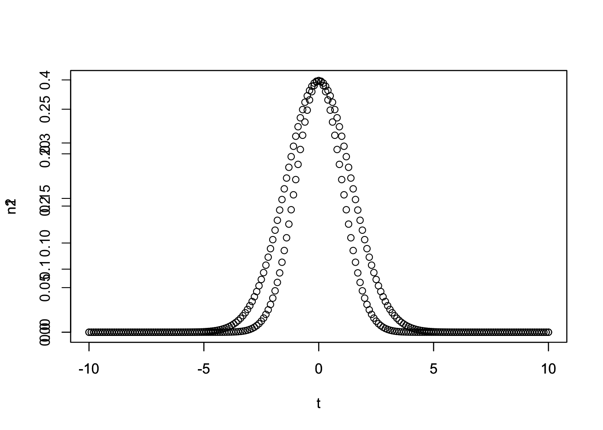
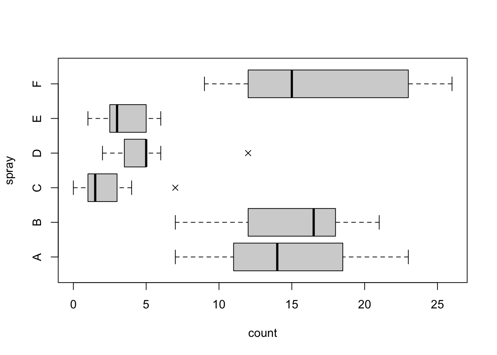
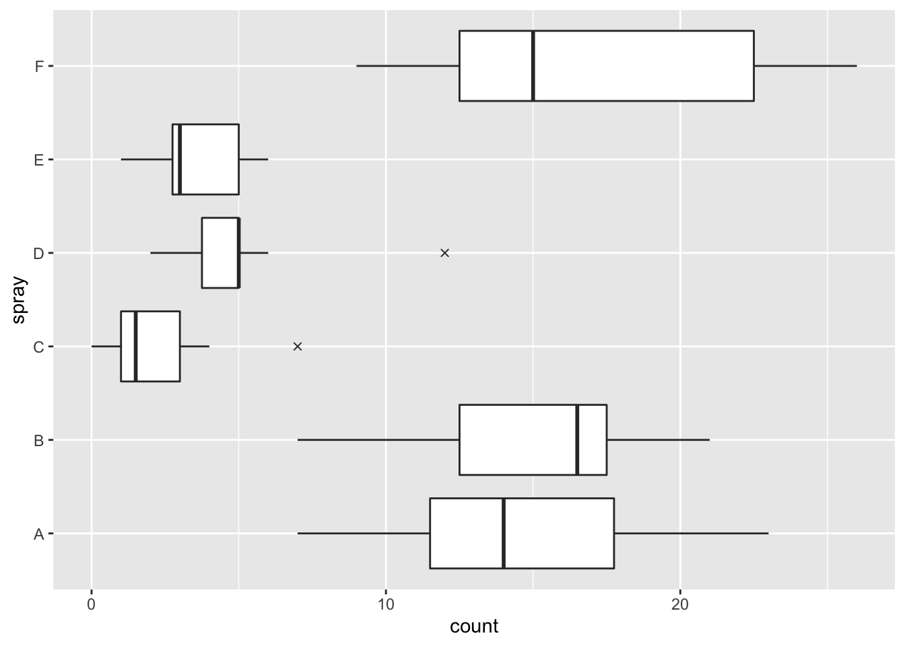
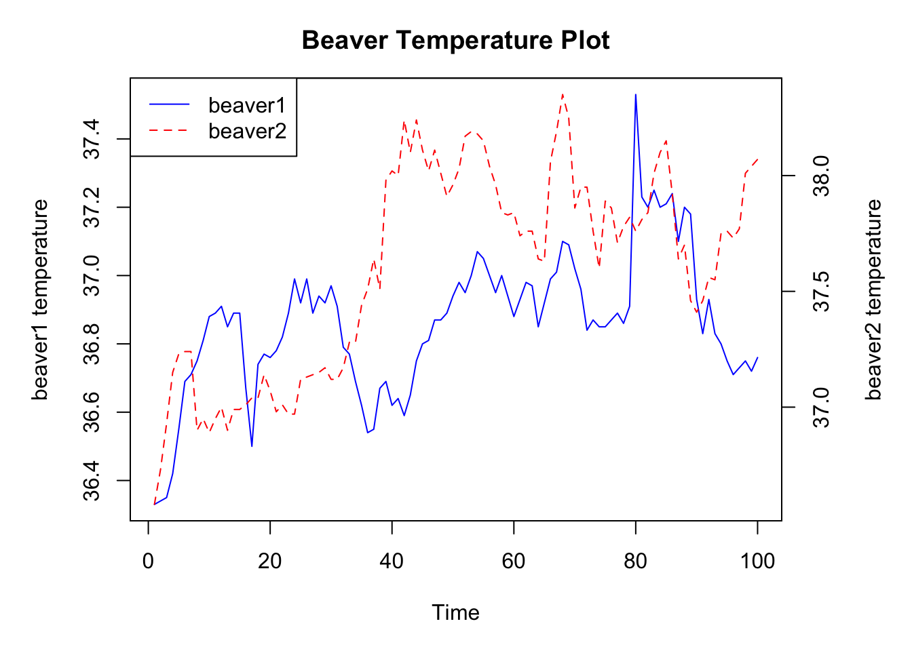

Chapter 4 R 基础操作
4.1 基本绘图
4.1.1 颜色
R中颜色设置主要依靠grDevices包的支持，其中提供大量颜色选择函数和生成函数。
固定颜色选择函数：R提供的自带固定种类的颜色，主要是colors()以及palette()：
pdf("colors-bar.pdf", height = 120)
par(mar = c(0, 10, 3, 0) + 0.1, yaxs = "i")
barplot(rep(1, length(colors())),
col = rev(colors()), names.arg = rev(colors()), horiz = TRUE,
las = 1, xaxt = "n", main = expression("Bars of colors in" ~ italic(colors()))
)
dev.off()title()函数用于添加标题，text()函数用于向图形中任意位置添加文本，mtext()函数用于向图中四条边上添加文本。
前面两个参数x和y表示图例的坐标位置（左上角顶点的坐标）
legend参数通常是一个字符向量，表示图例中的文字；
fill参数指定一个与图例字符向量对应的颜色向量用于在文本左边绘制一个颜色填充方块；
col参数设置图例中点和线的颜色
4.2 图库
4.2.2 茎叶图
同样用于展示数据密度的工具，但刻画略显粗劣；
stem(x,scale=1,width=80,aton=1e-08)
参数scale控制节与节之间的长度；
width控制茎叶图的宽度；
以一个整数表示后面还有多少片叶子没有被画出；
head(islands,10). ## R自带的数据集
4.2.3 条形图
par(mfrow = c(2, 1), mar = c(3, 2.5, 0.5, 0.1))mar：调整bottom左 top 右的边界宽度（以线的数量来衡量，另一个mai是以inchs来衡量，一般用mar，有default值）
mfrow显示的是subsequent
mfg表示在图中哪一个将会被draw在给出c(i,j)的情况下；
new每叠加一次新图形，运行一次该程序命令，即可实现在原图上继续叠加数据绘图
```r
par(mfrow=c(3,3))
plot(Nile)
plot(Nile)
plot(Nile)
plot(Nile)
plot(Nile)
plot(Nile)
plot(Nile)
plot(Nile)
plot(Nile)
2、使用split.screen()
split.screen(c(2,1)) # split display into two screens## [1] 1 2split.screen(c(1,3), screen = 2) # now split the bottom half into 3## [1] 3 4 5screen(1) # prepare screen 1 for output
plot(10:1)
screen(4) # prepare screen 4 for output
plot(10:1)
close.screen(all = TRUE) # exit split-screen mode
split.screen(c(2,1)) # split display into two screens## [1] 1 2split.screen(c(1,2),2) # split bottom half in two## [1] 3 4plot(1:10) # screen 3 is active, draw plot
erase.screen() #forgot label, erase and redraw
plot将图重叠在一个坐标系内的方法：
m = 0
sigma = 1
t = seq(-10,10,by=0.1)
n1 = 1 / sqrt(2 * pi * sigma) * exp(-(t - m)^2/(2*sigma) )
plot(t,n1)
par(new=TRUE)
sigma = 2
n2 = 1 / sqrt(2 * pi * sigma) * exp(-(t - m)^2/(2*sigma) )
plot(t,n2)
plot(x1,x2,xlab="维度",ylab="物种多样性数量"); #做散点图
lines(lowess(x1,x2),col=2); #利用lowess做回归曲线
par(new=TRUE) # 是否叠加新图形，没叠加一次运行一次该命令
plot(x3,x4,yaxt="n",xaxt="n",xlab="维度",ylab="物种多样性数量"); #做散点图
lines(lowess(x1,x2),col=2,lty=4); #利用lowess做回归曲线hist(v,main,xlab,xlim,ylim,breaks,col,border) v - 是包含直方图中使用数值的向量。
main - 表示图表的标题。
col - 用于设置条的颜色。
border - 用于设置每个栏的边框颜色。
xlab - 用于描述x轴。
xlim - 用于指定x轴上的值范围。
ylim - 用于指定y轴上的值范围。
breaks - 是用来提及每个栏的宽度。
4.2.4 箱线图
R中相应的函数为boxplot()
#default usuage
usage(boxplot.default)
#formula usuage
usage(graphics:::boxplot.formula)boxplot()是一个泛型函数，可以适应不同的参数类型。
notch是一个有用的逻辑参数，决定是否在箱子上画凹槽，凹槽所表示的是中位数的一个区间估计，其计算式：
\[
Q_2+/-1.58\mathrm{IQR}/\sqrt{n}
\]
区间的置信水平为95%，在比较两组数据中位数差异时候，只需要箱线图的凹槽是否有重叠部分就行；
boxplot(count ~ spray, data = InsectSprays,
col = "lightgray", horizontal = TRUE, pch = 4)
ggplot(aes(y = count, x = spray), data = InsectSprays) +
geom_boxplot(outlier.shape = 4) +
coord_flip()
4.2.5 散点图
散点图通常用于表示两个变量之间的关系；
图中每一个点的横纵坐标都分别对应两个变量各自的观测值，因此散点所反映出来的趋势也就是两个变量之间的关系；
R中散点图的函数为plot.default()但由于plot()是泛形，通常只需要提供两个数值型向量给plot()即可；
4.2.6 关联图
关联图是展示二维列联表数据的一种工具，主要基于列联表的独立性检验理论生成的图形；
对于一个\(r\times c\)列联表，\[ \chi^{2} \]统计量的定义为如下平方和形式：

其中，\(f_{ij}\)为单元格中观测频数，\(e_{ij}\)为期望频数；两者相差越大，则会导致检验统计量的值越大，说明行变量和列变量越不独立；
R中关联图的函数assocplot()
assocplot(x, col = c("black", "red"), space = 0.3, main = NULL, xlab = NULL,
ylab = NULL)4.2.7 条件密度图
条件密度图：展示的是一个变量的条件密度，或一个分类变量\(Y\)相对于一个连续变量\(X\)的条件密度\(P(Y|X)\)；
## ## Default S3 method:
cdplot(x, y, plot = TRUE, tol.ylab = 0.05, ylevels = NULL, bw = "nrd0",
n = 512, from = NULL, to = NULL, col = NULL, border = 1, main = "",
xlab = NULL, ylab = NULL, yaxlabels = NULL, xlim = NULL, ylim = c(0, 1), ...)par(mar = rep(0, 4)) # 继续前面的例子
persp(est$x1, est$x2, est$fhat, shade = 0.75, border = NA,
col = "lightblue", phi = 20, theta = 15, box = FALSE)
4.4 markdown 输出表格
x <- 1:10; y <- x^2; lmr <- lm(y ~ x)
co <- summary(lmr)$coefficients
print(co)knitr::kable(co)来表示表格
tidy=TRUE重排代码块——更好看
cache=TRUE缓存上次运行的结果
4.5 制作幻灯片
Rmd文件选用输出格式slidy_presentation可以生成网页格式的幻灯片， 并具有缩放字体大小、显示幻灯片目录等功能。 只要在.Rmd文件开头的YAML元数据部分指定output: slidy_presentation。 因为幻灯片的单位是帧(frame)， 与论文的结构有很大区别， 所以幻灯片Rmd文件很难同时作为论文的源文件。
4.5.1 生成网页html 形式
rmarkdown::render("mydemo.Rmd", output_file="handout.html", output_format="html_document", encoding="UTF-8")4.5.2 在Yaml中的设置：
使得数学公式在local mathjax库打开：
---
title: "R幻灯片演示样例"
output:
slidy_presentation:
mathjax: local
---4.5.3 Xaringan包的使用
①用markdown语法：三个短横线来开始一页新的幻灯片，可以用一个井号开始写标题（标题不是必须元素）；
②可以用两个短横线分割当前页面，两短横线下面的内容会被接续上面的内容生成在下一页上，比如你有一个三个项目的列表，中间用两短横线分割，最后出来的效果就是先显示第一项，翻下一页继续显示下一项；
③用三个问号添加slide的注释，注释只显示给pre者
进一步了解所有可能的选项，?xaringan::moon_reader
打开Rprofile的方式：
usethis::edit_r_profile()对于options(servr.daemon = TRUE)要记得写入~./Rprofile
ppt属性设置
- class
类属性用来设置CSS类，可用于调整ppt内文字的位置
- background-image
背景设置
插入数学公式
插入R代码
# 一个无聊的回归模型
fit = lm(dist~l+speed,data=cars)
coef(summary(fit))
dojutsu = c('di','tian','tu','shen','zuo')
grep('tian',dojutsu,value=TRUE)- 插入R图形
用plot函数等方式来实现；
4.6 ggplot绘图
4.6.1 final plot
par(mar = c(5, 5, 3, 5))
plot(beaver1[1:100, 3], type ="l", ylab = "beaver1 temperature",
main = "Beaver Temperature Plot", xlab = "Time",
col = "blue")
par(new = TRUE)
plot(beaver2[,3], type = "l", xaxt = "n", yaxt = "n",
ylab = "", xlab = "", col = "red", lty = 2)
axis(side = 4)
mtext("beaver2 temperature", side = 4, line = 3)
legend("topleft", c("beaver1", "beaver2"),
col = c("blue", "red"), lty = c(1, 2))
5、其他
tick取FALSE时，坐标轴线和刻度线不画出；
lty表示线型，用在axis函数中表示坐标轴线型；
lwd表示线的粗细，用在axis函数中表示坐标轴线粗细；
lwd.ticks表示刻度线粗细。
at表示坐标轴刻度的位置，可以自己指定，比如at=c(1,2,3,4,5,5.5,5.6,6,7)
labels表示与坐标轴刻度相对应的坐标轴标记，如labels=c(1,2,3,4,5,5.5,5.6,6,7)。如果要改变坐标轴，首先在画图的时候不需要把坐标轴画出来，然后再用axis加上去。如下：
plot(x,y,xaxt=“n”)
axis(side=1,at=c(….),labels=c(…))
下面是axis（）的完整参数列表，各个参数的详细含义见R。
axis(side, at = NULL, labels = TRUE, tick = TRUE, line = NA,
pos = NA, outer = FALSE, font = NA, lty = "solid",
lwd = 1, lwd.ticks = lwd, col = NULL, col.ticks = NULL,
hadj = NA, padj = NA, ...)| 参数 | 描述 |
|---|---|
| side | 一个整数，表示在图形的哪边绘制坐标轴（1=下，2=左，3=上，4=右） |
| at | 一个数值型向量，表示需要绘制刻度线的位置 |
| labels | 一个字符型向量，表示置于刻度线旁边的文字标签（如果为 NULL，则将直接使用 at 中的值 |
| tick | 一个逻辑值，指定是否应绘制刻度线和轴线 |
| line | 到轴线的行数距离 |
| pos | 坐标轴线绘制位置的坐标（即与另一条坐标轴相交位置的值） |
| outer | 一个逻辑值，指示是否应在外部绘图边距而非标准绘图边距中绘制轴 |
| font | 文字的字体 |
4.7 ploty绘图
ploty绘图是可互动的；
- 基本绘图命令：
plot_ly(data, x, y, z, type, mode...)
其中:
x：x轴数据
y ：y轴数据
z： z轴数据
text： 文本内容——在每一个点中的具体内容中进行显示
name： 名称，图注中使用
alpha：透明度
size： 点的大小
linetype： 线的类型
color：图形颜色
symbol：指定形状
stroke：边框颜色
showlegend： bool value
4.7.1 散点图
- 指定参数
add_trace(…,type=“scatter”,mode=“”)
%>%等同于ggplot中的+
进一步进行拓展：将mode改为lines或其他的模式；同时还可以mode 内将多个模式联合使用；
气泡图：就是将点的大小和颜色与其他特征联系起来（bubble）——选择type时候仍然是选择`scatter
哑铃图, 将起始点与终止点用segment连接起来 (Dumbbell)
- 包含的trace:
marker,line
4.7.2 柱类型（柱状图、堆积图、直方图、瀑布图……）
4.7.2.1 柱状图(Bar Charts)
- 指定参数
add_trace(...,type="bar")（等同于add_bars） - 要么用通用的add_trace&type=“ ”，要么使用add_bars
marker传入列表包括柱子的特征，line指定边框颜色粗细，color柱子颜色，opacity指定柱子的透明度；
layout对于柱状图的设置barmode: 设置直方图的展示形式, 可选参数: “stack” (堆叠展示) | “group” (分组展示) | “overlay” (覆盖展示) | “relative” (相对高度) (Default: “group”)bargap: 每个柱子的间隔barnorm: bar的标准化形式, 可选参数: “” | “fraction” (分数) | “percent” (百分数) (Default: ““)bargap: 设置相邻位置坐标 (不同特征) bar之间的间距 (0 ~ 1的区间)bargroupgap: 设置相同坐标 (相同特征) bar之间的间距 (0 ~ 1的区间) (Default: 0)
直方图 (Histgram)
- 指定参数
add_trace(...,type="historm")
opacity: 柱子的透明度, 0 ~ 1的区间 (Default: 1)
histfunc: 每一个柱子的统计指标: “count” (默认) | “sum” | “avg” | “min” | “max”
histnorm: 指定用于此直方图规格化类型: “” (默认) | “percent” | “probability” | “density” | “probability density”
marker: 传入列表参数, 指定直方图中柱子的特征
library(plotly)
ay <- list(
tickfont = list(color = "red"),
overlaying = "y",
side = "right",
title = "second y axis")
fig <- plot_ly()
fig <- fig %>% add_lines(x = ~1:3, y = ~10*(1:3), name = "slope of 10")
fig <- fig %>% add_lines(x = ~2:4, y = ~1:3, name = "slope of 1", yaxis = "y2")
fig <- fig %>% layout(
title = "Double Y Axis", yaxis2 = ay,xaxis = list(title="x"))
fig4.8 数据整理
4.8.1 数据结构
数组元素的排列次序缺省情况下是采用第一下标变化最快，最后下标变化最慢的顺序存放的；对于矩阵（二维数组）则是按列存放。例如，假设数组a的元素为1:24，维数向量为c(2,3,4)，则各元素次序为a[1,1,1], a[2,1,1], a[1,2,1], a[2,2,1], a[1,3,1], …, a[2,3,4]。
数组的访问
矩阵的生成与存储
matrix(data=NA, nrow = 1, ncol = 1, byrow = FALSE, dimnames = NULL) 生成一堆NA（表示无数据的）来进行生成矩阵
cbind：根据列进行合并，
rbind：根据矩阵的行进行合并
4.8.2 tibble数据结构(记得进一步补充)
一种改进的数据框
- 用
as_tibble()可以将一个数据框转换为tibble, dplyr包提供
列表类型的列：
tibble(x = 1:3,
y = list(1, 1:2, 1:3))在不写全工作路径情况下，默认为当前的工作路径下读取数据。
每一个对象都有属性：元信息描述对象的特性。属性能通过attributes()函数罗列出来并能通过attr()函数进行设置。
R函数使用关于对象类的信息来确定如何处理对象。可以使用class()函数来读取和设置对象的类。
x <- c(apple=2.5,orange=2.1)attributes(x)#返回对象x的各特殊属性组成的列表，不包括固有属性mode和lengthmode(x)length(x)可以用attr(object,name)的形式存取对象object的名为name的属性。如： attr(x,“names”)
也可以把attr()函数写在赋值的左边以改变属性值或定义新的属性，如: attr(x,“names”) <- c(“apple”,“grapes”)
eval(expr)ls()来查看工作空间；rm删除工作空间的变量；数据集经常需要选行子集、选列子集、排序、定义新变量、横向合并、长宽转换等操作， R的管道运算符
|>和magrittr包的|>特别适用于这种分步处理。
4.9 dataframe的操作
创建较为简易：直接调用data.frame函数就行
4.9.1 查询
- 查询某一行或某一列
可通过dataframe_name[row，]或dataframe_name[,column]
还可通过dataframe_name$column_name实现
若要查找符合条件的行，可采用
which()函数，得到的类型为数据框；查询某一个值，可通过
data.frame[row,column]实现which函数同样可以实现查找符合条件的值
4.9.4 添加
- 添加行
data.frame[new_row, ]<- value
还可以使用dplyr包内的mutate()
mutate(df,c=m+n+…+z)
group_by()函数，用于对不同的分组进行操作
%>%管道函数，将左侧的值传送给右边的表达式中，作为右侧的第一个函数的第一个参数；Summarize()概括dataframe的情况filter：过滤数据的基本操作
如果想删除一部分无效或者根本不感兴趣的数据。 dplyr有filter（）函数来做这样的过滤。 使用dplyr，可以帮助使用者像使用SQL或者传统BI工具以简单且更直观的方式进行过滤。
d.class |>
filter(sex=="F", age<=13) |>
knitr::kable() 同时还可以将这些数据传递给knitr ::kable() 生成数据框
同时也可以直接命名一个变量传递给变量
- select() 可以用于生成一个新的数据框
可直接新生成变量，然后再筛选数据：
data2$Gender[which(data2$Gender =='F')] <- 'W'4.9.5 tidyverse系统
purrr包可以方便列表操作
- Pluck() :同[[提取列表中的元素
- keep()： 保留满足条件元素
- discard(): 删除满足条件元素
- compact(): 删除空元素
- append(): 列表末尾增加元素
- flatten():
数据框是由列向量组成，有着矩阵形式的列表；
数据框每一列代表一个变量属性，一行一个样本数据；
tibble()不改变输入变量的类型，不创建行名；
- tibble输出时候不自动显示所有行，避免大数据框时显示很多内容
- []选取子集，返回的仍然是tibble;
4.9.6 中文字体的使用
library(showtext)
showtext.auto(enable=TRUE)
font.add('SimSun', regular = '/Library/Fonts/Microsoft/SimSun.ttf')json是javaScript object notation简称，一种轻量化的数据表示方式，采用key：value的形式记录数据，直观，比XML简洁；
<request>
<firstName>Brett</firstName>
<lastName>McLaughlin</lastName>
<email>brett@newInstance.com</email>
</request>par的使用：每一个图形都有自己的参数，就是在图形还没绘制完成前，打开一个新的绘图设备。